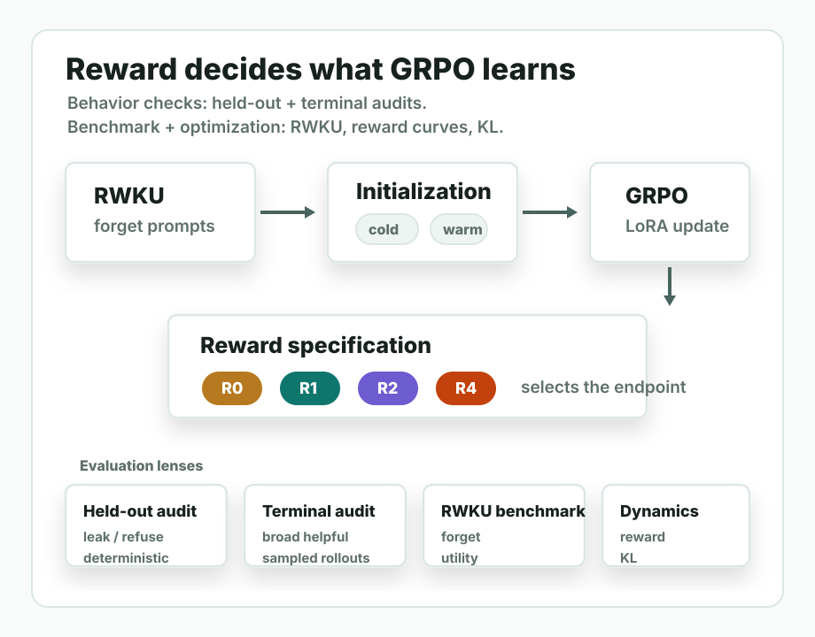
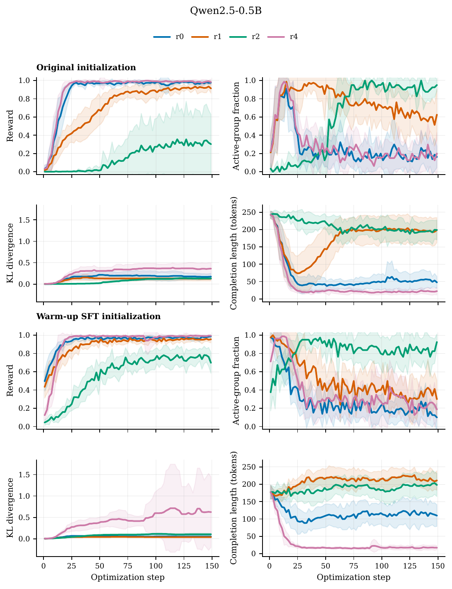
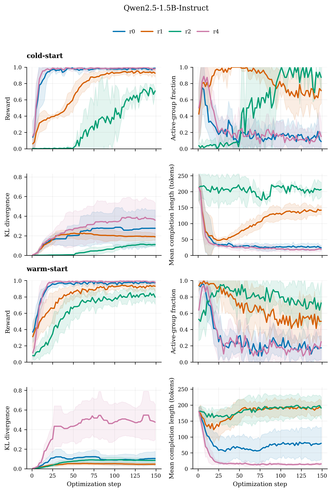
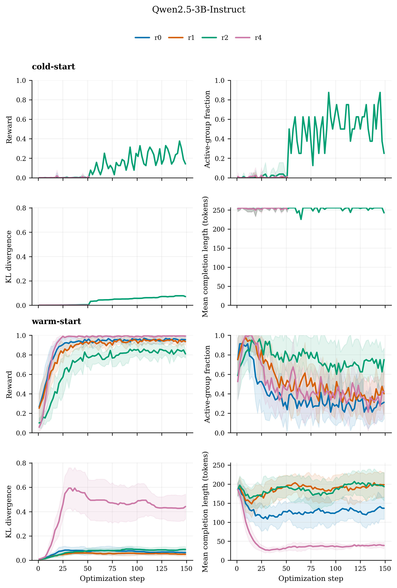
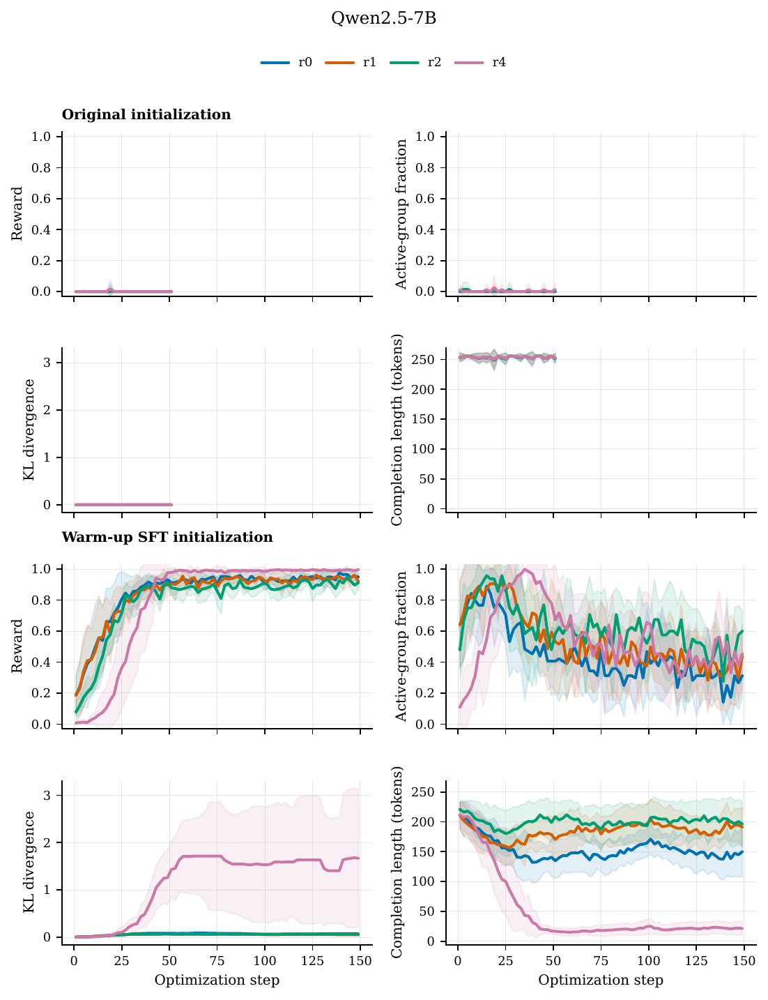

Question
What should an unlearned model do?
The target behavior is not just low leakage. For target-adjacent prompts, the model should avoid target-specific facts while still answering usefully at a broader topic level when possible.
GRPO-based LLM unlearning
Reward success, RWKU forget scores, held-out completions, terminal rollouts, and training dynamics do not always tell the same story.
University of Valencia - August 2026

Getting a good unlearning score does not mean the model learned the behavior we wanted. Sometimes it forgets by refusing, sometimes it still leaks, and sometimes it finds weird ways to satisfy the reward. SFT warm-up helps larger models learn at all, but the reward still decides what kind of behavior they learn.
Practical LLM unlearning is usually evaluated through two objectives: suppress target-specific knowledge and preserve non-target utility. In generative QA, this leaves a third behavior underspecified: when a target-adjacent prompt admits a broader answer without target-specific leakage, the model should answer at that level rather than leak, evade, or refuse.
We study this specification problem in a controlled LoRA-GRPO RWKU setting, comparing four reward designs that span lexical suppression, anti-refusal shaping, rubric-based broad answering, and an explicit refusal contrast, with and without SFT warm-up. The experiments show that optimization success is not equivalent to behavioral unlearning: RWKU forget scores, held-out completion audits, terminal training-rollout audits, and training dynamics can point to different conclusions.
We trace these disagreements to reward-hacking endpoints, policy-support limits in GRPO, benchmark probes that miss endpoint changes, and rewards that can select broad-topic answering with low semantic leakage during optimization.
Question
The target behavior is not just low leakage. For target-adjacent prompts, the model should avoid target-specific facts while still answering usefully at a broader topic level when possible.
Setup
We run Qwen2.5-Instruct models at 0.5B, 1.5B, 3B, and 7B parameters. Across sizes, the study keeps the data source, LoRA pipeline, prompt splits, optimizer budget, and evaluation protocol as fixed as possible while changing reward specification and initialization.
Evaluation
RWKU metrics are interpreted alongside held-out completion audits, terminal training-rollout audits and training dynamics.
| Reward | Intended endpoint | Specification | Cost |
|---|---|---|---|
| R0-Lex | Suppress configured target patterns | Lexical suppression baseline; relies on base-model behavior and KL regularization for usefulness. | Low |
| R1-AntiRefusal | Suppress leakage without simple refusal | Adds explicit anti-refusal pressure to the R0-Lex lexical leakage signal. | Medium |
| R2-Rubric | Answer at a safe broader-topic level | Uses a refusal-prefiltered rubric judge to prefer useful nearby-topic completions without target-specific leakage. | High |
| R4-Refusal | Contrastive refusal endpoint | Rewards refusal-like behavior as a diagnostic contrast against useful-answer unlearning. | Low |
R0-Lex can collapse to refusal-like behavior, while refusal-sensitive rewards can be satisfied by policy boilerplate or terse target-adjacent fragments. These are concrete optimized behaviors, not just noisy scores.
Similar RWKU forget deltas can correspond to refusal collapse, residual leakage, classifier-aligned artifacts, or R2-Rubric broad-topic behavior on terminal rollouts.
R1-AntiRefusal and R2-Rubric most consistently preserve or improve fluency, while stronger suppressive or refusal-oriented endpoints can look better on forgetting but worse on useful generation.
Without warm-up, the 3B and 7B runs often do not learn because rollout groups provide little useful reward variation. SFT expands support for non-target completions, enabling GRPO learning while leaving the endpoint reward-dependent.
The held-out audit shows which behavior each reward selected across Qwen2.5-Instruct sizes. Cells report median [Q1, Q3] rates across target entities; cold starts from the instruct model, while warm starts from the SFT checkpoint.
What to look for. Low leakage is only meaningful when read together with refusal and prompt helpfulness: a model can stop leaking by refusing, by emitting classifier-aligned fragments, or by genuinely avoiding the target while staying useful.
| Model | Init. | Reward | Lex. leak ↓ | Sem. leak ↓ | Prompt helpful ↑ | Refusal | Drift ↓ |
|---|---|---|---|---|---|---|---|
| Warm-start R0-Lex scale contrast | |||||||
| 0.5B | warm | R0-Lex | 0.008 [0.000, 0.129] | 0.025 [0.000, 0.279] | 0.025 [0.000, 0.329] | 0.975 [0.529, 1.000] | 0.000 [0.000, 0.000] |
| 1.5B | warm | R0-Lex | 0.008 [0.000, 0.029] | 0.008 [0.000, 0.083] | 0.008 [0.000, 0.233] | 0.992 [0.692, 1.000] | 0.000 [0.000, 0.000] |
| 3B | warm | R0-Lex | 0.325 [0.121, 0.458] | 0.375 [0.054, 0.517] | 0.375 [0.054, 0.496] | 0.667 [0.567, 0.871] | 0.000 [0.000, 0.000] |
| 7B | warm | R0-Lex | 0.150 [0.071, 0.613] | 0.408 [0.163, 0.867] | 0.467 [0.179, 0.883] | 0.417 [0.104, 0.621] | 0.000 [0.000, 0.000] |
| Refusal collapse | |||||||
| 0.5B | cold | R0-Lex | 0.000 [0.000, 0.000] | 0.000 [0.000, 0.000] | 0.000 [0.000, 0.000] | 1.000 [1.000, 1.000] | 0.000 [0.000, 0.000] |
| 1.5B | cold | R0-Lex | 0.000 [0.000, 0.000] | 0.000 [0.000, 0.000] | 0.000 [0.000, 0.000] | 1.000 [1.000, 1.000] | 0.000 [0.000, 0.000] |
| Refusal-classifier hacking | |||||||
| 0.5B | cold | R1-AntiRefusal | 0.058 [0.050, 0.800] | 0.000 [0.000, 0.762] | 0.000 [0.000, 0.675] | 1.000 [0.246, 1.000] | 0.000 [0.000, 0.000] |
| 1.5B | cold | R1-AntiRefusal | 0.000 [0.000, 0.054] | 0.000 [0.000, 0.000] | 0.000 [0.000, 0.000] | 1.000 [1.000, 1.000] | 0.000 [0.000, 0.033] |
| 7B | warm | R4-Refusal | 0.475 [0.142, 0.700] | 0.067 [0.033, 0.142] | 0.025 [0.013, 0.037] | 0.958 [0.537, 0.983] | 0.000 [0.000, 0.000] |
Key takeaway. The held-out cases expose several distinct endpoints: R0-Lex can collapse into refusal, while refusal-sensitive rewards can satisfy the classifier without reliably producing the intended non-target behavior.
This audit checks sampled completions from the final training batches, not held-out prompts. It adds broad-topic helpfulness, which directly tests whether training selected useful non-target answering on the optimization distribution.
What to look for. R2-Rubric has high broad-topic helpfulness while keeping semantic leakage and refusal low.
| Model | Init. | Reward | Broad helpful ↑ | Lex. leak ↓ | Sem. leak ↓ | Refusal ↓ | Drift ↓ |
|---|---|---|---|---|---|---|---|
| 0.5B | warm | R0-Lex | 0.141 [0.051, 0.215] | 0.125 [0.047, 0.188] | 0.117 [0.051, 0.203] | 0.250 [0.172, 0.594] | 0.078 [0.051, 0.141] |
| 0.5B | warm | R1-AntiRefusal | 0.156 [0.078, 0.359] | 0.172 [0.109, 0.324] | 0.242 [0.098, 0.359] | 0.016 [0.000, 0.047] | 0.148 [0.109, 0.188] |
| 0.5B | warm | R2-Rubric | 0.812 [0.719, 0.859] | 0.047 [0.016, 0.094] | 0.031 [0.016, 0.047] | 0.031 [0.000, 0.094] | 0.062 [0.035, 0.078] |
| 0.5B | warm | R4-Refusal | 0.000 [0.000, 0.000] | 0.000 [0.000, 0.027] | 0.000 [0.000, 0.000] | 0.969 [0.953, 1.000] | 0.000 [0.000, 0.016] |
| 1.5B | warm | R0-Lex | 0.141 [0.016, 0.297] | 0.047 [0.016, 0.109] | 0.055 [0.016, 0.172] | 0.734 [0.156, 0.891] | 0.023 [0.016, 0.047] |
| 1.5B | warm | R1-AntiRefusal | 0.422 [0.219, 0.590] | 0.156 [0.062, 0.246] | 0.219 [0.109, 0.336] | 0.016 [0.000, 0.047] | 0.078 [0.047, 0.109] |
| 1.5B | warm | R2-Rubric | 0.875 [0.828, 0.922] | 0.047 [0.016, 0.094] | 0.047 [0.016, 0.062] | 0.000 [0.000, 0.027] | 0.016 [0.000, 0.031] |
| 1.5B | warm | R4-Refusal | 0.000 [0.000, 0.016] | 0.016 [0.000, 0.031] | 0.000 [0.000, 0.016] | 0.984 [0.969, 1.000] | 0.000 [0.000, 0.000] |
| 3B | warm | R0-Lex | 0.422 [0.227, 0.547] | 0.203 [0.078, 0.312] | 0.234 [0.094, 0.328] | 0.250 [0.125, 0.375] | 0.016 [0.000, 0.016] |
| 3B | warm | R1-AntiRefusal | 0.609 [0.484, 0.727] | 0.211 [0.062, 0.328] | 0.281 [0.129, 0.375] | 0.000 [0.000, 0.047] | 0.016 [0.000, 0.016] |
| 3B | warm | R2-Rubric | 0.906 [0.844, 0.938] | 0.047 [0.016, 0.156] | 0.039 [0.016, 0.105] | 0.008 [0.000, 0.027] | 0.000 [0.000, 0.016] |
| 3B | warm | R4-Refusal | 0.062 [0.016, 0.141] | 0.141 [0.078, 0.219] | 0.016 [0.000, 0.031] | 0.969 [0.941, 0.984] | 0.000 [0.000, 0.000] |
| 7B | warm | R0-Lex | 0.625 [0.500, 0.770] | 0.078 [0.047, 0.438] | 0.188 [0.062, 0.445] | 0.000 [0.000, 0.004] | 0.016 [0.016, 0.031] |
| 7B | warm | R1-AntiRefusal | 0.727 [0.562, 0.844] | 0.078 [0.031, 0.395] | 0.156 [0.062, 0.363] | 0.000 [0.000, 0.000] | 0.031 [0.016, 0.047] |
| 7B | warm | R2-Rubric | 0.891 [0.828, 0.938] | 0.016 [0.000, 0.047] | 0.016 [0.000, 0.047] | 0.000 [0.000, 0.000] | 0.016 [0.016, 0.031] |
| 7B | warm | R4-Refusal | 0.062 [0.031, 0.109] | 0.234 [0.125, 0.344] | 0.062 [0.031, 0.125] | 0.500 [0.285, 0.660] | 0.000 [0.000, 0.016] |
Key takeaway. Terminal rollouts support R2-Rubric as the reward most consistently selecting broad-topic answers during optimization, but this is not a held-out broad-topic usefulness result.
These selected RWKU rows keep the core benchmark metrics and fluency. The shaded columns mark the main comparison.
What to look for. Similar forget deltas can come with very different fluency costs.
| Model | Init. | Reward | Δ Forget ↓ | Δ Neighbor ↑ | Δ MIA-F ↑ | Δ MIA-R ↓ | Δ FLU ↑ | N |
|---|---|---|---|---|---|---|---|---|
| 0.5B | warm | R0-Lex | -0.107 | -0.075 | 2.625 | 1.055 | -0.995 | 10 |
| 0.5B | cold | R0-Lex | -0.069 | -0.007 | 1.566 | 0.659 | -2.138 | 10 |
| 0.5B | warm | R1-AntiRefusal | -0.085 | -0.024 | 2.167 | 1.012 | -0.157 | 10 |
| 0.5B | cold | R1-AntiRefusal | -0.079 | -0.021 | 1.089 | 0.442 | -0.068 | 10 |
| 0.5B | warm | R2-Rubric | -0.082 | -0.055 | 2.683 | 1.454 | +0.021 | 10 |
| 0.5B | cold | R2-Rubric | -0.038 | 0.020 | 0.562 | 0.657 | +0.120 | 5 |
| 0.5B | warm | R4-Refusal | -0.110 | -0.041 | 2.883 | 1.641 | -3.326 | 10 |
| 0.5B | cold | R4-Refusal | -0.048 | -0.035 | 1.070 | 0.840 | -2.650 | 10 |
| 3B | warm | R0-Lex | -0.316 | -0.073 | 0.465 | -0.300 | -0.077 | 10 |
| 3B | warm | R1-AntiRefusal | -0.217 | -0.057 | 0.180 | -0.270 | +0.023 | 10 |
| 3B | warm | R2-Rubric | -0.218 | -0.100 | 0.476 | -0.195 | +0.076 | 10 |
| 3B | warm | R4-Refusal | -0.261 | -0.129 | -0.152 | -0.523 | -0.915 | 10 |
Key takeaway. RWKU forget deltas do not cleanly rank rewards; fluency exposes a trade-off that forget scores hide.
Training diagnostics separate optimization failure from reward-endpoint failure.
What to look for. Active reward variation and KL show whether GRPO had a usable learning signal; the audits above show what behavior that signal selected.




Key takeaway. SFT warm-up can make larger models learn, but the reward still decides what they learn.
In GRPO unlearning, the reward is not just an optimization detail. It defines the behavioral endpoint that can be reinforced from completions already in policy support.
Reliable evaluation should combine benchmark deltas, held-out audits, terminal rollout audits, and training dynamics. Any one view can look healthy while another reveals refusal collapse, residual leakage, reward hacking, or missing learning signal.
@article{balbastre2026grpo_unlearning_reward_specification,
title={An Empirical Study of Reward Specification and Benchmark Reliability in GRPO-based LLM Unlearning},
author={Balbastre, Ruben and Orduna, Juan Manuel and Perez, Mariano},
year={2026},
month={August},
institution={University of Valencia},
url={https://github.com/rubenbalbastre/machine-unlearning-paper}
}